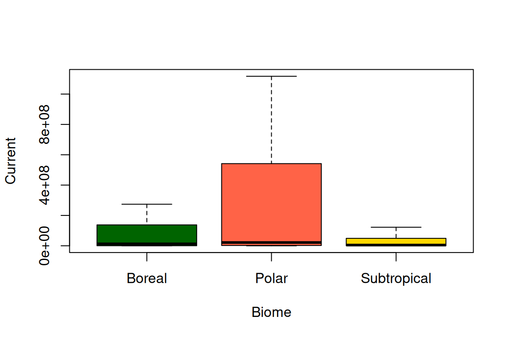
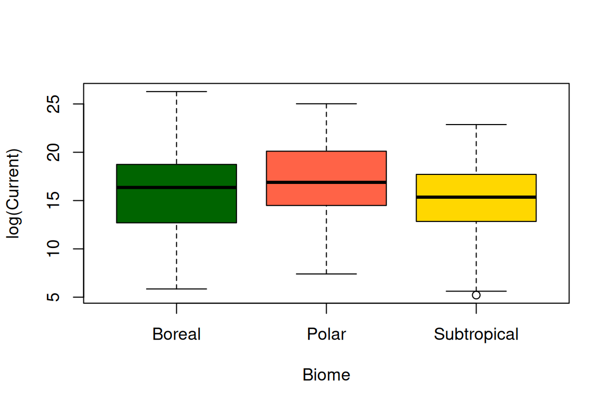
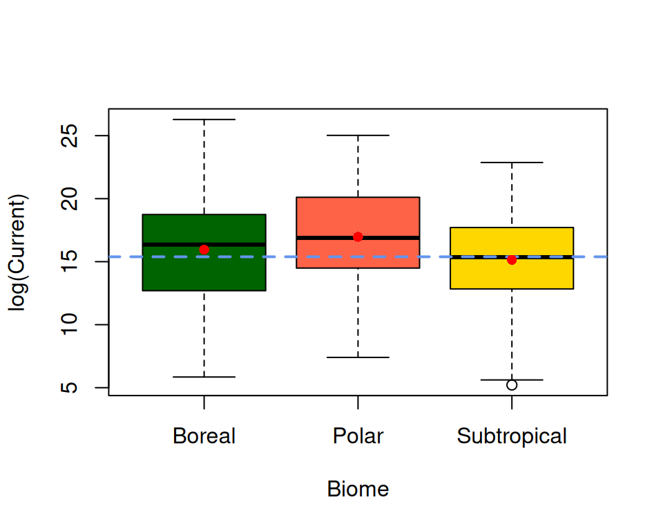
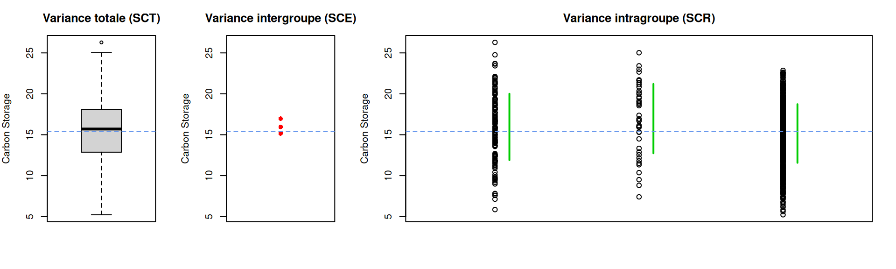
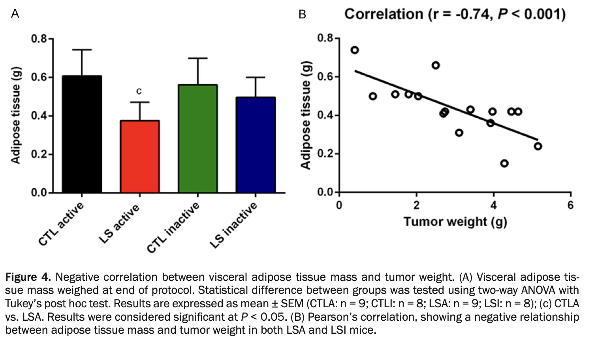
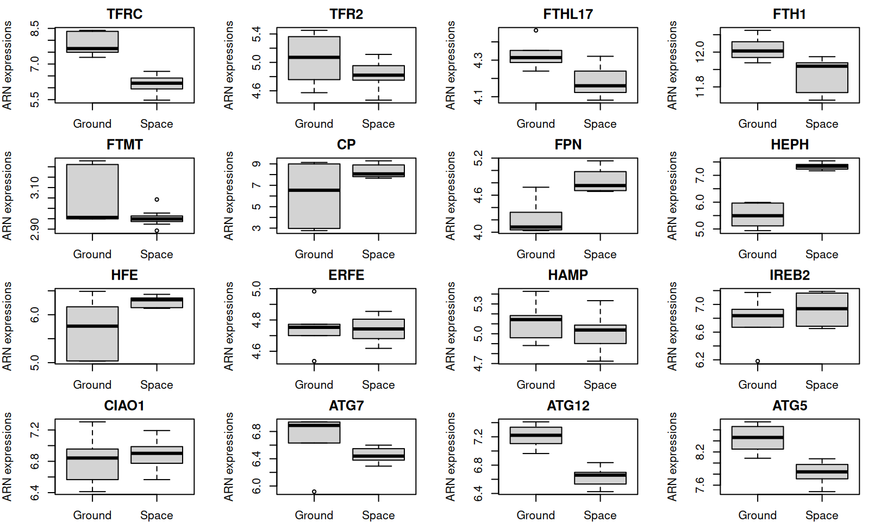
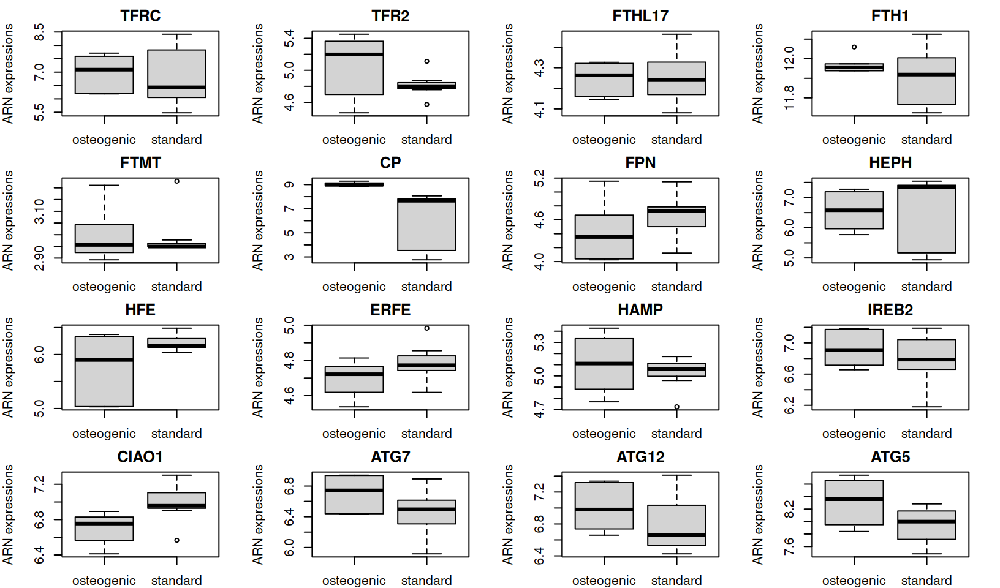

Chapitre 4 Tests statistiques (ANOVA et Kruskal Wallis)
4.1 Tests statistiques pour plusieurs groupes
Pour ce chapitre, nous prendrons un autre exemple de données. Ces dernières illustrent le potentiel de stockage en carbon au niveau du sol en fonction des types de biomes. Ce travail a fait l’objet d’une publication scientifique dans le Journal PNAS. Vous pouvez lire le papier ici.
Les données peuvent être téléchargées ici.
Importer les données avec le code suivant :
## [1] "Biome" "Type" "Current" "Potential"La matrice présente quatre variables, une variable sur les types de climats/biomes, la seconde variable correspond au type de terrain où a été réalisé le prélévement (par exemple, forêt ou terrain agricole). Enfin, la troisième variable correspond au stockage de carbon actuel et la dernière variable concerne le stockage de carbon potentiel encore possible. La somme des deux dernières colonnes correspond donc à la capacité du biome à stocker du carbon.
Dans les démonstrations qui vont suivre, nous nous intéresserons uniquement à la capacité actuelle et aux trois biomes suivant : “Subtropical”, “Temperate” et “Boreal”.
Sélectionner les variables Biome et Current en sélectionnant uniquement les observations qui valident la condition demandée. Enregister le tout dans un nouvel objet.
Représenter le stockage actuel en fonction des 3 biomes.
w <- which(Carbon_storage$Biome=="Subtropical"|Carbon_storage$Biome=="Polar"|Carbon_storage$Biome=="Boreal")
df <- data.frame("Biome"= Carbon_storage$Biome, "Current"=Carbon_storage$Current)[w,]
df = droplevels.data.frame(df)
boxplot(Current~Biome, df, outline=F, col=c("darkgreen", "tomato", "gold"))
Figure 4.1: Représentation du stockage actuel en fonction des biomes.
La question de recherche est maintenant de savoir s’il existe une différence dans le stockage de carbon (mesuré en 2022) entre ces trois biomes.
De la même manière que les tests statistiques que nous avons vu dans les cours précédents, nous devons verifier en amont si la variable pour chacun des groupes respecte la normalité et des variances égales.
- À l’aide de la fonction
shapiro.wilk()etbartlett.test(), vérifier la normalité de la variable dans les trois biomes et si leurs variances sont proches.
for(biome in unique(df$Biome)){
SW <- shapiro.test(df$Current[which(df$Biome==biome)])
print(paste("Le test de Shapiro.Wilk renvoie une statistique (W) de", round(SW$statistic, 2), "et une p value associée de", SW$p.value, "pour le biome suivant", biome))
}## [1] "Le test de Shapiro.Wilk renvoie une statistique (W) de 0.26 et une p value associée de 1.41832946008063e-44 pour le biome suivant Subtropical"
## [1] "Le test de Shapiro.Wilk renvoie une statistique (W) de 0.1 et une p value associée de 6.05259801465719e-26 pour le biome suivant Boreal"
## [1] "Le test de Shapiro.Wilk renvoie une statistique (W) de 0.25 et une p value associée de 7.58129235692607e-14 pour le biome suivant Polar"- Que conclure sur les normalités de la variable en fonction des groupes ?
##
## Bartlett test of homogeneity of variances
##
## data: Current by Biome
## Bartlett's K-squared = 3028.6, df = 2, p-value < 2.2e-16Que conclure sur l’égalité des variances de la variable entre les groupes ?
Vers quelle famille de tests statistiques allez-nous nous tourner pour répondre à notre question biologique ?
4.1.1 Test non paramétrique (Kruskall-Wallis)
Le test de Kruskall-Wallis permet de comparer la position de 3 échantillons ou plus, \(x_1 = \{x_{11},··· ,x_{1n_1}\} , x_2 = \{x_{21},··· ,x_{2n_2}\} , ···, x_k = \{x_{k1},··· ,x_{kn_k}\}\).
\(H_0 : \hat{\theta}_1 =\hat{\theta}_2=\hat{\theta}_k\) contre au moins une des \(\theta\) est différent des autres (\(H_1\)). Pour rappel \(\theta\) est la distribution des rangs d’une variable pour un groupe \(k\).
La statistique de test est donnée par :
\[S_{KW}= \frac{12}{n(n+1)} \sum_{i=1}^k \frac{R_{i.}^2}{n_i}-3(n+1),\]
où \(n=\sum_{i=1}^k n_i\) est le nombre total d’observation et \(R_{i.}\) est la somme des rangs d’un groupe \(i\).
La loi de la statistique de test est tabulée pour les petits échantillons. Pour les grands échantillons, la statistique de test suit une loi du \(\chi^2\) à \(k − 1\) degrés de liberté. En présence, d’ex-aequo, il existe une formule ajustée.
##
## Kruskal-Wallis rank sum test
##
## data: Current by Biome
## Kruskal-Wallis chi-squared = 12.314, df = 2, p-value = 0.002119- Que pouvez-vous dire par rapport aux résultats du test statistique et à la probabilité d’observer ce résultat ?
4.1.2 Test paramétrique (ANOVA)
4.1.2.1 Normalisation
Nous ne pouvons pas utiliser les données précédentes pour un test statistique À MOINS DE TRANSFORMER CES DONNÉES. La transformation des données permet de potentiellement changer la loi de distribution des données, par exemple pour les rendre normales, gaussiennes.
La transformation est différente de la normalisation.
La normalisation permet de mettre les différentes variables/observations sur une même échelle pour permettent de les comparer entre elles. La transformation a pour objectif de changer les lois de distribution pour permettre d’utiliser des outils statistiques spécifiques à une loi de distribution ciblée.
Nous verrons ici la transformation des données selon une échelle logarithmique (i.e. la fonction log() dans R).

Figure 4.2: Représentation du stockage actuel (log transformé) en fonction des biomes.
Quelles sont vos remarques ?
Refaire le test de normalité et d’égalités des variances.
for(biome in unique(df$Biome)){
SW <- shapiro.test(log(df$Current[which(df$Biome==biome)]))
print(paste("Le test de Shapiro.Wilk renvoie une statistique de", round(SW$statistic, 2), "et un p value associée de", SW$p.value, "pour le biome suivant", biome))
}## [1] "Le test de Shapiro.Wilk renvoie une statistique de 0.98 et un p value associée de 3.38726641706307e-06 pour le biome suivant Subtropical"
## [1] "Le test de Shapiro.Wilk renvoie une statistique de 0.99 et un p value associée de 0.66406346581351 pour le biome suivant Boreal"
## [1] "Le test de Shapiro.Wilk renvoie une statistique de 0.98 et un p value associée de 0.484560225022285 pour le biome suivant Polar"##
## Bartlett test of homogeneity of variances
##
## data: log(Current) by Biome
## Bartlett's K-squared = 5.7155, df = 2, p-value = 0.0574- Que pouvons-nous conclure ?
Attention il ne faut pas uniquement regarder la probabilité d’observer cet événement (\(p\) value), la statistique de test (par exemple \(W\) pour le Shapiro) est très importante et aide à prendre des décisions.
4.1.2.2 ANOVA à effet fixe (1 facteur)
Pour comprendre l’ANOVA (ANalysis Of VAriance), il faut bien caractériser les variables du système que l’on étudie pour ne pas faire d’erreur dans la formule.
Le Biome est une variable considérée comme qualitative avec trois modalités bien déterminées. Nous l’appelons le facteur. Ici, le facteur ” Biome ” est l’effet fixe.
Le stockage actuel du Carbone au niveau des sols est considéré comme quantitative car obtenu par une mesure (analyse d’image). Nous l’appelons la variable réponse.
L’analyse de la variance permet de répondre à la question : “Y a-t-il un effet biome sur les stockages de carbone au niveau des sols ?”
L’analyse de la variance (ANOVA) est une méthode statistique qui permet d’étudier les différences de moyenne \(\mu\) d’une quantité \(Y\) (variable réponse quantitative) selon l’influence éventuelle d’un ou de plusieurs effets fixes (ici biome) : le facteur \(X\). Le facteur \(X\) est une variable qualitative présentant un nombre restreint de modalités. On note \(J\) le nombre de modalités (ici \(J=3\)).
Le modèle de l’analyse de la variance s’écrit :
\[Y_{i,j} = \mu + \alpha_j+\varepsilon_{i,j},\]
pour \(i = 1, …, I\) et \(j = 1, …, J\) où \(Y_{i,j}\) est la valeur de la variable réponse \(Y\) (i.e. stockage de carbon) pour l’observation \(i\) dans la modalité (niveau, i.e. biome) \(j\), \(\mu\) est l’effet moyen, \(\alpha_j\) est l’effet différentiel de la modalité \(j\) (i.e. d’un biome), et \(\varepsilon_{i,j}\) est le terme d’erreur aléatoire.
boxplot(log(Current)~Biome, df, col=c("darkgreen", "tomato", "gold"))
abline(h=mean(log(df$Current)), col="cornflowerblue", lwd=2, lty="dashed")
cnt=1
for(biome in unique(df$Biome)){
points(x=as.numeric(unique(df$Biome))[cnt],y=mean(log(df$Current[which(df$Biome==biome)])), pch=16, cex=1, col="red")
cnt=cnt+1
}
Figure 4.3: Représentation graphique du modèle de l’Analyse des Variances. La ligne en blue correspond à la moyenne globale du modèle. Les points rouges correspondent à la somme de la moyenne globale + l’effet différentiel (moyenne des groupes).
Dans le graph ci-contre, l’effet moyen est la moyenne globale du stockage de carbone (ligne en pointillée bleue), et l’effet différentiel de chaque modalité correspond à la distance entre la moyenne de la modalité \(j\) et la moyenne globale. Les moyennes de chaque modalités sont représentées par des points rouges.
Estimation des paramètres du modèle
L’estimation des paramètres (moyenne de chaque modalité) sur R se réalise grâce à la fonction lm().
Ce que nous tentons de modéliser, c’est bien le stockage de carbone actuel en fonction de la variable fixe : biome. Dans R, le mot “[…] en fonction de […]” s’écrit ~. Ainsi la formule dans R sera :
##
## Call:
## lm(formula = log(Current) ~ Biome, data = df)
##
## Residuals:
## Min 1Q Median 3Q Max
## -10.1024 -2.3482 0.2012 2.6407 10.3311
##
## Coefficients:
## Estimate Std. Error t value Pr(>|t|)
## (Intercept) 15.9508 0.3064 52.061 <2e-16 ***
## BiomePolar 1.0181 0.6312 1.613 0.1072
## BiomeSubtropical -0.8022 0.3395 -2.363 0.0184 *
## ---
## Signif. codes: 0 '***' 0.001 '**' 0.01 '*' 0.05 '.' 0.1 ' ' 1
##
## Residual standard error: 3.702 on 829 degrees of freedom
## Multiple R-squared: 0.01691, Adjusted R-squared: 0.01454
## F-statistic: 7.13 on 2 and 829 DF, p-value: 0.000851- Décortiquer les résultats du modèle. Identifier les moyennes de la variable en fonction des groupes ?
L’intercept dans ce modèle est le biome “Boreal”. Mais non pouvons écrire un modèle sans intercept.
##
## Call:
## lm(formula = log(Current) ~ 0 + Biome, data = df)
##
## Residuals:
## Min 1Q Median 3Q Max
## -10.1024 -2.3482 0.2012 2.6407 10.3311
##
## Coefficients:
## Estimate Std. Error t value Pr(>|t|)
## BiomeBoreal 15.9508 0.3064 52.06 <2e-16 ***
## BiomePolar 16.9688 0.5519 30.75 <2e-16 ***
## BiomeSubtropical 15.1486 0.1462 103.60 <2e-16 ***
## ---
## Signif. codes: 0 '***' 0.001 '**' 0.01 '*' 0.05 '.' 0.1 ' ' 1
##
## Residual standard error: 3.702 on 829 degrees of freedom
## Multiple R-squared: 0.9455, Adjusted R-squared: 0.9453
## F-statistic: 4796 on 3 and 829 DF, p-value: < 2.2e-16- Décortiquer les résultats du modèle. Identifier les moyennes de la variable en fonction des groupes ?
Test d’hypothèse
L’analyse de la variance est souvent utilisée pour tester l’égalité des moyennes.
Hypothèses de test :
\(H_0 : \mu_1 = \mu_2 = … = \mu_J\) contre \(H_1\) : au moins une des moyennes est différente.
ou bien (de manière équivalente) :
\(H_0 : \alpha_1 = \alpha_2 = … = \alpha_J = 0\) contre \(H_1\) : au moins un \(\alpha_j\) est différent de zéro.
On pourrait dire pour décrire \(H_0\) que les trois biomes stockent la même quantité de carbone.
Rejeter \(H_0\) s’interprète de la manière suivante : (1) Deux modalités différentes du facteur \(X\) entrainent une différence significative de la variable réponse \(Y\). (2) Le facteur \(X\) a un effet significatif sur la variable réponse \(Y\).
Statistique de l’ANOVA
La statistique de test se base sur la variance observée entre les moyennes des échantillons (variance inter-groupe) et la variance entre les observations à l’intérieur des modalités (variance intra-groupe).
On s’intéresse donc au rapport entre la variance expliquée par les facteurs (ici biome) et la variance résiduelle intra-groupe.
Dans ce cas, nous prendrons comme notation :
SCT (Somme des Carrés Totale) traduit la variation totale de \(Y\).
SCE (Somme des Carrés Expliquée) traduit la variation expliquée par le modèle.
SCR (Somme des Carrés des Résidues) traduit la variation inexpliquée par le modèle.
et nous avons la relation :
\[SCT=SCE+SCR\]
ylim=range(log(df$Current))
layout(matrix(c(1,2,3,3,3),nrow=1))
par(mar=c(4,4,3,2))
cnt=1
boxplot(log(df$Current), ylim=ylim, main="Variance totale (SCT)", ylab="Carbon Storage")
abline(h=mean(log(df$Current)), col="cornflowerblue", lwd=1, lty="dashed")
plot(x=1, y=1, col="white", ylim=ylim, ylab="Carbon Storage", axes=F, xlab="", main="Variance intergroupe (SCE)")
for(biome in unique(df$Biome)){
points(x=1,y=mean(log(df$Current[which(df$Biome==biome)])), pch=16, cex=1, col="red")
cnt=cnt+1
}
axis(2)
box()
abline(h=mean(log(df$Current)), col="cornflowerblue", lwd=1, lty="dashed")
plot(x=as.numeric(df$Biome), y=log(df$Current), ylim=ylim, xlim=c(0.5, 3.5),
ylab="Carbon Storage", axes=F, xlab="", main="Variance intragroupe (SCR)")
cnt=1
for(biome in unique(df$Biome)){
segments(x0=as.numeric(unique(df$Biome))[cnt]+0.1,
y0=mean(log(df$Current[which(df$Biome==biome)]))-sd(log(df$Current[which(df$Biome==biome)])),
y1=mean(log(df$Current[which(df$Biome==biome)]))+sd(log(df$Current[which(df$Biome==biome)])),
col="green3", lwd=2)
cnt=cnt+1
}
axis(2)
box()
abline(h=mean(log(df$Current)), col="cornflowerblue", lwd=1, lty="dashed")
Figure 4.4: Représentation graphique du modèle de l’Analyse des Variances avec la variance totale, la variance intergroupe et la variance intragroupe. La ligne en blue correspond à la moyenne globale du modèle. Les points rouges correspondent à la somme de la moyenne globale + l’effet différentiel (moyenne des groupes). Les lignes vertes correspondent à la variance intragroupe.
On utilise la statistique de test :
\[F_n = \frac{SCE/(J − 1)}{SCR/(n − J)}\]
\(SCE/(J − 1)\) est la part de variance de \(Y\) expliquée par le modèle (i.e. par les modalités/facteurs \(X\)),
\(SCR/(n − J)\) est la part résiduelle de variance \(Y\).
Plus \(F_n\) est grande et plus on s’écarte de l’hypothèse nulle. Autrement dit, plus la distance entre les points rouge augmente ET/OU la variance résiduelle (intragroupe) diminue, plus grande sera la statistique F.
##
## Call:
## lm(formula = log(Current) ~ Biome, data = df)
##
## Residuals:
## Min 1Q Median 3Q Max
## -10.1024 -2.3482 0.2012 2.6407 10.3311
##
## Coefficients:
## Estimate Std. Error t value Pr(>|t|)
## (Intercept) 15.9508 0.3064 52.061 <2e-16 ***
## BiomePolar 1.0181 0.6312 1.613 0.1072
## BiomeSubtropical -0.8022 0.3395 -2.363 0.0184 *
## ---
## Signif. codes: 0 '***' 0.001 '**' 0.01 '*' 0.05 '.' 0.1 ' ' 1
##
## Residual standard error: 3.702 on 829 degrees of freedom
## Multiple R-squared: 0.01691, Adjusted R-squared: 0.01454
## F-statistic: 7.13 on 2 and 829 DF, p-value: 0.000851## Analysis of Variance Table
##
## Response: log(Current)
## Df Sum Sq Mean Sq F value Pr(>F)
## Biome 2 195.4 97.714 7.1297 0.000851 ***
## Residuals 829 11361.7 13.705
## ---
## Signif. codes: 0 '***' 0.001 '**' 0.01 '*' 0.05 '.' 0.1 ' ' 1La \(p\) value du test est très petite devant 5% d’erreur, nous pouvons dire qu’il existe un effet significatif de la modalité (biome) sur la variable réponse \(Y\) (stockage de carbone).
Ce qui est très intéressant de noter ici, c’est la part d’explication du facteur Biome sur le stockage de Carbone qui reste très faible 195/(195+11361) = 1.68 %.
## [1] 0.01687435Malgré que cette explication soit significative, les chercheurs devront continuer leur recherches pour déterminer les autres facteurs qui pourraient expliquer la variabilité dans le stockage de carbone.
4.2 Biais d’interprétation liés à la multiplicité des tests
4.2.1 Théorie et demonstration
Si plusieurs hypothèses sont testées, la probabilité de rejeter de manière incorrecte une hypothèse nulle (c’est-à-dire commettre une erreur de type I) augmente. Dans ce cas là, l’hypothèse nulle rejetée serait un faux résultat positif.
Pour comprendre le problème inhérent à la multiplicité des tests, faisons une démonstration en simulant des données. Je simule deux groupes de 100 obsevrations avec une moyenne identique et un écart-type identique. Nous sommes d’accord pour dire que les moyennes sont censés être identique.
Nous allons ré-itérer la simulation 100 fois pour que cela soit parlant en terme de pourcentage.
set.seed(7)
P = NULL
for(i in 1:100){
groupe_1 = rnorm(100)
groupe_2 = rnorm(100)
P = c(P, t.test(groupe_1, groupe_2)$p.value)
}Pour chaque simulation, nous allons réaliser un test de Student entre les deux groupes et enregistrer la \(p\) value de chaque test dans l’objet P.
- Que fais la ligne de code suivante ?
## [1] 3- Qu’observez-vous ? Que pouvez-vous dire de ce résultat ?
4.2.2 Correction de la \(p\) value : correction de Bonferroni
La correction de Bonferroni compense cette augmentation de faux positives en testant chaque hypothèse à un niveau de signification (ou de risque) plus faible. La correction de Bonferroni propose de diviser le risque souhaité \(\alpha\) par le nombre d’hypothèses testées \(k\), soit \(\alpha /k\).
Dans l’exemple précèdent, on a 3 groupes (3 modalités). Etant donnée qu’il existe un effet biome sur le stockage en carbone nous souhaitons maintenant savoir quelles sont les différences entre les modalités 2 à 2.
Dans ce context, nous allons réaliser 3 tests statistiques pour comparer :
Boreal vs Subtropical,
Boreal versus Polar,
Polar versus Subtropical
Nous utiliserons les tests appropriés vus au chapitre précédent (test de Student ou Wilcoxon) en corrigeant le risque de significativité de 5%. Bonferroni propose donc de corriger le seuil de significativité à 0.05/3, 3 étant le nombre de tests réalisés. Le nouveau seuil de significativité serait donc de 0.017. Autrement dit, si la \(p\) value du test est supérieure à 0.017, Bonferroni suggère d’accepter \(H_0\).
L’idée est de réaliser des tests de Student entre deux biomes et estimer la \(p\) value.
for(i in unique(df$Biome)[1:2]){
for(j in unique(df$Biome)[2:3]){
if(i!=j){
X <- df$Current[which(df$Biome==i)]
Y <- df$Current[which(df$Biome==j)]
print(paste(i, "Versus", j))
print(wilcox.test(X, Y)$p.value)
}
}
}## [1] "Subtropical Versus Boreal"
## [1] 0.03237358
## [1] "Subtropical Versus Polar"
## [1] 0.002687245
## [1] "Boreal Versus Polar"
## [1] 0.1226622Entre quelles biomes observons-nous des capacités de stockages différentes avec un seuil de significativité de 5 % ?
Même question en se basant sur le risque corrigé selon la méthode de Bonferroni ?
4.3 Révisions
4.3.1 QCM
1. L’ANOVA se réalise lorsqu’il y a une variable quantitative et une variable qualitative à 2 modalités.
- [ ] Vrai
- [ ] Faux
Afficher la réponse
❌ Faux2. Quelles phrases sont correctes ?
Afficher la réponse
✅ On accepte \(H_0\) lorsque la p value est supérieur à 0.05.
✅ Le Kruskal-Wallis est un test non paramétrique.3. Combien d’\(H_0\) l’ANOVA à 2 facteurs peut-elle tester ?
- [ ] 1
- [ ] 2
- [ ] 3
- [ ] 4
Afficher la réponse
✅ 34.3.2 Questions ouvertes (définitions)
Définissez \(H_0\) (Hypothèse Nulle) lorsque vous réalisez un test du Shapiro-Wilk.Afficher la réponse
\(H_0\) : La variable étudiée suit une loi normale.Quelle est la différence entre variable qualitative et modalité ?
Afficher la réponse
La variable qualitative est une variable catégorielle qui décrit une qualité/attribut.
Une modalité est l’une des catégories que peut prendre cette variable.
Exemple : Variable qualitative = « couleur », modalités = rouge, bleu, vert.
Expliquez de manière vulgarisée, en vous appuyant sur la formule de l’ANOVA à 1 facteur, comment elle fonctionne.
Afficher la réponse
Le numérateur de la statistique de test correspond à la variabilité entre les moyennes des groupes.
Le dénominateur correspond à la variabilité intra-groupe (résiduelle).
La statistique du test augmente si :
- Les moyennes des groupes sont très différentes.
- Les dispersions intra-groupes sont faibles (faible écart-type).
4.3.3 Problème
Les auteurs d’une publication (Am J Cancer Res 2017;7(5):1037-1053) testent deux variables qualitatives avec deux modalités chacune :
- Santé : CTL (contrôle) vs LS (cancéreux)
- Activité physique : Inactive vs Active
Ils mesurent la masse du tissu adipeux viscéral (moyenne ± SEM). Les résultats sont disponibles sur cette figure :

Décrire le graphique.
Afficher la réponse
Le graphique compare la masse adipeuse des souris (variable quantitative) selon une condition de santé (contrôle ou cancéreuse) et selon l’activité physique (active ou inactive).À partir du graphique, quels tests préconisez-vous ?
Afficher la réponse
Une ANOVA à 2 facteurs (formule : Masse adipeuse ~ (en fonction de) santé × environnement).Donner les \(H_0\) associées à ce graphique (questions biologiques).
Afficher la réponse
\(H_0\) (1) La masse du tissu adipeux est identique quelle que soit la modalité de la variable activité physique (active vs inactive).
\(H_0\) (2) La masse du tissu adipeux est identique quelle que soit la modalité de la variable santé (contrôles vs cancéreuses).
\(H_0\) (3) La masse du tissu adipeux n’est pas associée à l’interaction entre santé et activité physique.Au vu du graphique, quelles \(H_0\) rejetteriez-vous ?
Afficher la réponse
On rejette \(H_0\) (3) → La masse du tissu adipeux semble associée à l’interaction entre santé et activité physique.4.4 Travaux pratiques
Durée : 3h
Nous utiliserons pour l’ensemble des prochains TPs un jeu de données issu d’une étude réalisée dans la Station Spatial Internationale. Une partie des résultats est déjà publiée dans cet article : https://link.springer.com/article/10.1007/s12217-018-9653-2.
L’ensemble des données est téléchargeable sur la plateforme de la NASA : https://osdr.nasa.gov/bio/repo/data/studies/OSD-546.
Objectif : explorer les conséquences de la microgravité (i.e. pas de pesanteur) sur le métabolisme du fer dans des Hematopoïetic Stem Cell en condition de différenciation cellulaire (HSC vers osteoblastes).
Les données du TP peuvent être téléchargées ici
- Importer les données.
df <- read.table(file = "data/TPs/iron_metabolism_RNA_TP.csv", sep=";", header = T)
load("data/TPs/meta_data.rda")- Définir les 4 conditions expérimentales. Montrer la matrice de confusion.
## Micro_env
## Macro_env osteogenic standard
## Ground 3 3
## Space 3 4Définir les conditions de ground versus Space ? (variable qualitative : macro-environnement)
Définir les conditions de osteogenic versus Standard (variable qualitative : micro-environnement). Lire le papier pour être au clair avec les conditions.
Faire un petit récapitulatif de comment fonctionne le métabolisme du fer au niveau intra-cellulaire. Nous pourrons appuyer nos résultats sur de la littérature existante : https://doi.org/10.1113/JP289149.
Définir \(n\) et \(p\).
4.4.1 Statistiques descriptives du metabolisme du fer
- Visualiser l’effet du macro-environnement sur chaque expression d’ARNm.
layout(matrix(c(1:p), nrow = 4, byrow=T))
par(mar=c(2,4,2,2))
for(i in 1:p){boxplot(as.numeric(df[,-c(1,2)][, meta_data$ID][i,])~as.factor(meta_data$Macro_env), main=(df$SYMBOL)[i], xlab="", ylab="ARN expressions")}
- Que peut-on dire ?
- Quelles seraient les hypothèses \(H_0\) et \(H_1\) ?
- Les données sont-elles normales et/ou possèdent une variance similaire entre les groupes ? Peut-on répondre à cette question lorsque \(n\) est aussi petit ?
- Visualiser l’effet du micro-environnement sur chaque expression d’ARNm.
layout(matrix(c(1:p), nrow = 4, byrow=T))
par(mar=c(2,4,2,2))
for(i in 1:p){boxplot(as.numeric(df[,-c(1,2)][, meta_data$ID][i,])~as.factor(meta_data$Micro_env), main=(df$SYMBOL)[i], xlab="", ylab="ARN expressions")}
- Que peut-on dire ?
- Quelles seraient les hypothèses \(H_0\) et \(H_1\) ?
- Les données sont-elles normales et/ou possèdent une variance similaire entre les groupes ?
Réaliser des corrélations entre les variables pour vérifier le fonctionnement du métabolisme du fer.
Faire la même figure en ajoutant des couleurs pour les conditions.
4.4.2 Tests statistiques
Quels tests statistiques utiliser ?
Via une boucle for() réaliser l’ensemble des tests ?
- pour déterminer l’effet de la vit. D3 (différenciation HSC vers Ostéoblast : micro-environnement) sur l’expression des ARNm ?
- pour déterminer l’effet de la microgravité (macro-environnement) sur l’expression des ARNm ?
- Quelle est la probabilité de faire une erreur de type I ?
- Appliquer une correction de Bonferroni ?
- Que peut-on dire de l’effet de la vit. D3 ? Que peut-on dire de l’effet de la microgravité (macro) sur le métabolisme du fer dans les HSC/osteoblastes ?